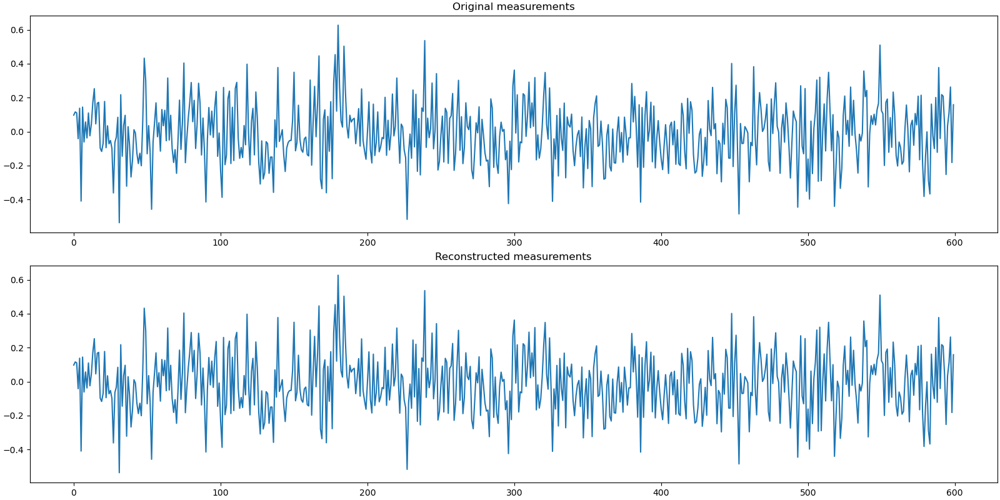

Note
Go to the end to download the full example code
Signed Spikes, Gaussian Measurements¶
In this example we have
A signal \(\bx\) of length \(n=2560\) with \(k=20\) signed spikes. Each spike has a magnitude of 1. The sign for each spike is randomly assigned. The locations of spikes in the signal are also randomly chosen.
A Gaussian sensing matrix \(\Phi\) of shape \(m \times n = 600 \times 2560\) making 600 random measurements in a vector \(\bb\) given by the sensing equation \(\bb = \Phi \bx\). The columns of the sensing matrix are unit normalized.
The signal is sparse in standard basis. This is a relatively easy sparse recovery problem and focuses on the compressive sensing process modeled as:
See also:
# Configure JAX to work with 64-bit floating point precision.
from jax.config import config
config.update("jax_enable_x64", True)
import jax.numpy as jnp
import cr.nimble as crn
import cr.sparse.plots as crplot
Setup¶
We shall construct our test signal, measurements and sensing matrix using our test problems module.
Let us access the relevant parts of our test problem
# The Gaussian sensing matrix operator
A = prob.A
# The measurements
b0 = prob.b
# The sparse signal
x0 = prob.x
Sparse Recovery using Subspace Pursuit¶
We shall use subspace pursuit to reconstruct the signal.
import cr.sparse.pursuit.sp as sp
# We will try to estimate a k-sparse representation
sol = sp.solve(A, b0, k)
This utility function helps us quickly analyze the quality of reconstruction
problems.analyze_solution(prob, sol)
m: 600, n: 2560
b_norm: original: 4.441 reconstruction: 4.441 SNR: 297.61 dB
x_norm: original: 4.472 reconstruction: 4.472 SNR: 298.08 dB
Sparsity: original: 20, reconstructed: 20, overlap: 20, ratio: 1.000
Iterations: 2
The estimated sparse signal
x = sol.x
Let us reconstruct the measurements from this signal
b = A.times(x)
Let us visualize the original and reconstructed signal
Let us visualize the original and reconstructed measurements
Sparse Recovery using Compressive Sampling Matching Pursuit¶
We shall now use compressive sampling matching pursuit to reconstruct the signal.
import cr.sparse.pursuit.cosamp as cosamp
# We will try to estimate a k-sparse representation
sol = cosamp.solve(A, b0, k)
problems.analyze_solution(prob, sol)
m: 600, n: 2560
b_norm: original: 4.441 reconstruction: 4.441 SNR: 293.05 dB
x_norm: original: 4.472 reconstruction: 4.472 SNR: 292.62 dB
Sparsity: original: 20, reconstructed: 20, overlap: 20, ratio: 1.000
Iterations: 2
The estimated sparse signal
x = sol.x
Let us reconstruct the measurements from this signal
b = A.times(x)
Let us visualize the original and reconstructed signals
plot_signals(x0, x)

Let us visualize the original and reconstructed measurements
plot_measurments(b0, b)
Sparse Recovery using SPGL1¶
import cr.sparse.cvx.spgl1 as crspgl1
options = crspgl1.SPGL1Options()
sol = crspgl1.solve_bp_jit(A, b0, options=options)
problems.analyze_solution(prob, sol)
m: 600, n: 2560
b_norm: original: 4.441 reconstruction: 4.441 SNR: 93.60 dB
x_norm: original: 4.472 reconstruction: 4.472 SNR: 89.45 dB
Sparsity: original: 20, reconstructed: 20, overlap: 20, ratio: 1.000
Iterations: 36 n_times: 39, n_trans: 37
The estimated sparse signal
x = sol.x
Let us reconstruct the measurements from this signal
b = A.times(x)
Let us visualize the original and reconstructed signals
plot_signals(x0, x)
Let us visualize the original and reconstructed measurements
plot_measurments(b0, b)
Total running time of the script: (0 minutes 8.345 seconds)